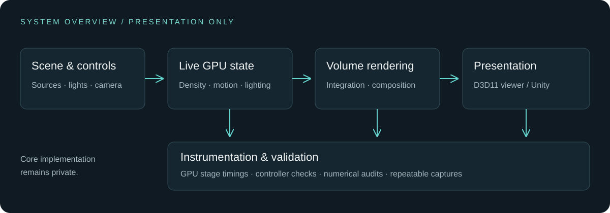

Shape & motion
GPU-evolving smoke with sources, forces, pause and reset. Local industrial emitters give the effect a visible origin.
Live smoke. Dynamic light.
A graphics system built to be seen,
interrogated, and measured.
01 / THE RESEARCH SYSTEM
How can a dynamic volumetric effect remain responsive and visually interpretable while its GPU cost and numerical behavior remain measurable?
SmokeLab brings live GPU smoke, editable sources and colored lighting into a native viewer. A shared high-level compute contract also runs in an isolated Unity Player.
An independent engineering implementation of established techniques. No new-method superiority or publication claim.

GPU-evolving smoke with sources, forces, pause and reset. Local industrial emitters give the effect a visible origin.
Two colored lights, volumetric self-shadowing and analytic scene occlusion. Full-resolution surfaces meet half-resolution integration.
A Unity 6 algorithm adapter with verified initial-density parity. Engine mesh-depth integration remains future work.
02 / LOOK INSIDE THE EFFECT
Lighting, optical coverage and transmittance.
Same recorded simulation and event times.
03 / EVIDENCE OVER IMPRESSION
| Repeat | Wall P95 | GPU P95 | Valid GPU |
|---|---|---|---|
| 01 | 16.053 ms | 5.859 ms | 300 / 300 |
| 02 | 15.954 ms | 5.791 ms | 300 / 300 |
| 03 | 15.932 ms | 5.793 ms | 300 / 300 |
1280×720 display · 640×360 volume · 64³ simulation.
60 warm-up + 300 measured frames per repeat. UI on; capture off.
View-sampling refinement
relative RGB L1
Shadow-sampling refinement
relative RGB L1
1,048,576 FP32 values
native / Unity initial density
Refinement checks cover one fixed state with a shared cache; cache spatial convergence is not certified. Initial-density equality does not certify evolving fields or final radiance. Full result scopes ↗
No tightly converged pressure solver, physical multiple scattering, Unity GPU performance certification, real Unity mesh-depth integration or manual keyboard/mouse acceptance. Controller-state regression passed. No matched-cost superiority claim is made.
04 / CONTRIBUTION AREAS
Live dynamic state, volume illumination and scene composition in a native graphics tool.
Shared compute interfaces, initialization validation and an actual Unity Player run.
Repeated timings, programmatic checks, numerical audits and synchronized diagnostic captures.
05 / OPEN RESEARCH DIRECTIONS
Dynamic light-transport cache invalidation and budgeted updates.
Pressure, boundary fidelity and longer-term volumetric structure.
Cross-engine validation and real scene-depth integration.
Seeking computer-graphics research collaborations in dynamic volume rendering, simulation fidelity, and reproducible cross-engine evaluation.
Connect with cusdnCore implementation remains private. This page shares presentation assets and aggregate results only.